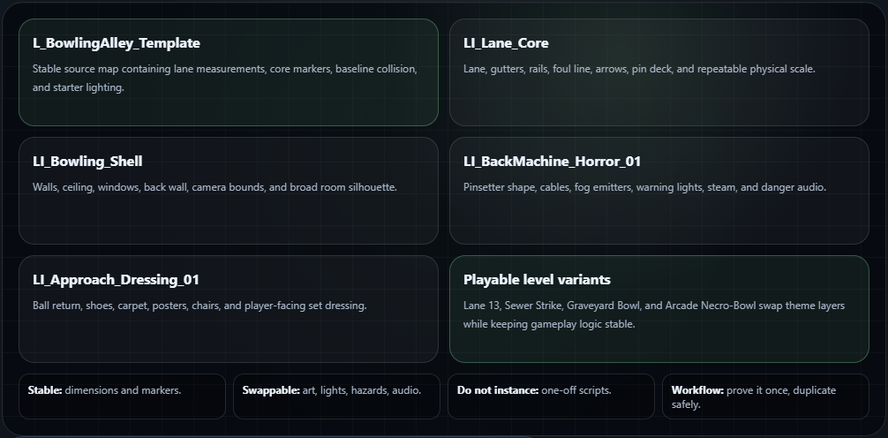

10
Turn the first lane into a reusable level system
Once the lane feels good, do not keep copying random actors by hand. Group repeatable pieces so future levels are fast to create and easy to maintain.
Future-proofLevel Instances
Reusable chunks
LI_Lane_Core- lane, gutters, rails, foul line, arrows, pin deck.LI_Bowling_Shell- walls, ceiling, back wall.LI_BackMachine_Horror_01- pinsetter props, cables, fog, lights.LI_Approach_Dressing_01- ball return, carpet, shoe props, posters.
Future level variations
- Lane 13: classic abandoned alley.
- Sewer Strike: lane flooded with waste and steam.
- Graveyard Bowl: outside lane through cemetery slabs.
- Arcade Necro-Bowl: neon horror bonus round.
Level Instance workflow
- Select a clean group of actors in the Outliner.
- Right-click the selection and look for the Level or Level Instance creation option.
- Save the new Level Instance asset into a clear folder.
- Replace only stable, reusable chunks; leave one-off scare scripting and boss logic in the playable level variant.
Before making a chunk
Use the Outliner to verify the selection contains only the intended actors. Check Details for any accidental temporary meshes, test triggers, or prototype-only items before committing the chunk.
Clean duplication workflow: keep
L_BowlingAlley_Template pure. Duplicate it to create playable maps. When a system is proven, move it back into the template.What not to instance: gameplay objects that must vary heavily per level, boss-specific scripts, one-off scare triggers, or temporary prototype meshes.
Reusable level architectureTemplate -> chunks -> variants
Build one reliable lane, then split it into repeatable chunks. Future levels should change dressing, lighting, hazards, and mood without rebuilding lane measurements or marker logic.

Variant knobsChange these per map
- Lighting: tube color, sign color, backlight intensity, flicker timing, shadow direction.
- Dressing: posters, cabinets, damage level, bodies, props, exterior window view.
- Hazards: moving machine parts, slime pools, enemy lanes, scare triggers, blocked gutters.
- Audio: room tone, machine groans, crowd stingers, strike impact, zombie-pin barks.
Keep stableDo not reinvent these
- Lane dimensions: foul line, lane width, pin rack spacing, gutter placement.
- Marker names: code should keep finding the same actor tags and Target Point names.
- Collision logic: gutter/pit/approach volumes should stay predictable across variants.